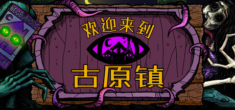

🔥🔥🔥
今日有新旗舰：DeepSeek-V4.1-Flash
DeepSeek 发布 V4.1-Flash：552B MoE，API deepseek-flash，MIT 权重；新价 04:00 UTC Sep 10 生效。
- 日期
- 2026-09-10
- 库
- AI 观察
- 状态
- 一般可用 · 旗舰 · MIT
今日有新旗舰：DeepSeek-V4.1-Flash。今日无新 MCP/Skill 推荐。主线是 DeepSeek 把 V4.1-Flash 推到 API / 权重开源，以及独立作《欢迎来到古原镇》《魔法腮红》同日 1.0 / 发售翻牌；二次元鸣潮「景燃」身赴三途唤取开门。
deepseek-flash；MIT 权重）判定：旗舰轴回暖主导；独立双发售补行业密度。不复述 Nintendo Direct / Zelda Direct / 夜勤人2 / Gemini 3.8 Flash / Baseten / Astra / Fable。
跨库最高 Attention 落在 DeepSeek-V4.1-Flash 旗舰，以及《欢迎来到古原镇》1.0 与《魔法腮红》发售；鸣潮「景燃」唤取开门补二次元密度。
观察清单：TGS 9/17–21；DeepSeek V4.1-Pro；Grok 下一档；田园乐土 1.0 翻牌（延续）。
DeepSeek 发布 V4.1-Flash：552B MoE，API deepseek-flash，MIT 权重；新价 04:00 UTC Sep 10 生效。
Chris Cote / Kwalee 叙事独立作 Steam 1.0 翻牌；Very Positive，Metacritic 86。
Alkacer / DANGEN 发售；厂商中文「魔法腮红」；早期 Positive。
9/10 10:00–9/29 11:59 服务器时间；武器「千般渡」同步。二线源，库街区原帖待核。
| 观察库 | 独立 Signal | 密度 | 备注 |
|---|---|---|---|
| AI 观察 | 2 | 高 | 今日有新旗舰 DeepSeek-V4.1-Flash；今日无新 MCP/Skill 推荐 |
| 二次元游戏观察 | 1 | 中 | 鸣潮「景燃」唤取开门 |
| 游戏开发观察 | 0 | 空 | 游戏开发空库未出 Tab |
| 游戏行业观察 | 2 | 高 | 独立双发售；无展会片单新轴 |
游戏开发观察今日无达门槛新增，空库未出 Tab。今日有新旗舰 DeepSeek-V4.1-Flash；今日无新 MCP/Skill 推荐。
判定：旗舰 + 独立双发售主导；开发轴安静。
今日有新旗舰：DeepSeek-V4.1-Flash。今日无新 MCP/Skill 推荐。窗内另有 Cursor Projects beta（编程轴，不当推荐）。
deepseek-flash；旧 ID 路由到本模型；MIT 权重开源。不复述 Gemini 3.8 Flash / Fable / Astra / Baseten / AWS MCP。不发 Anthropic threat-intel 政治案例。
DeepSeek 于 2026-09-10 发布 V4.1-Flash：552B MoE，Causal Encoder-Decoder（8B active 输入 / 16B 输出），原生多模态；API 型号 deepseek-flash，旧 deepseek-v4-flash / deepseek-v4-flash-vision-exp 路由至本模型；权重 MIT 开源。


deepseek-flash；legacy deepseek-v4-flash / deepseek-v4-flash-vision-exp → 本模型deepseek-v4-pro 临时路由至 V4.1-Flash 并按 Flash 价，直至 V4.1-Pro。| 指标 | DeepSeek-V4.1-Flash | DeepSeek-V4-Pro | DeepSeek-V4-Flash | GPT-5.6 Sol |
|---|---|---|---|---|
| GPQA Diamond | 90.9 | 92.4 | 89.9 | 94.1 |
| Terminal-Bench 2.1 | 90.6 | 87.9 | 82.7 | 88.8 |
| DeepSWE v1.1 | 74.2 | 62.7 | 54.4 | 73.0 |
| Codeforces | 3471 | 3348 | 3289 | 未核 |
数字来源：Hugging Face DeepSeek-V4.1-Flash README（max effort）。厂商自报。缺格写未核，不编。定价：api-docs.deepseek.com/quick_start/pricing/
关注度 · 🔥🔥🔥。今日旗舰。来源：deepseek.com 新闻 · API docs news260910 · 定价 · HF
Cursor changelog Sep 10 2026：Projects beta——coordinator、cloud agents、共享上下文与订阅。记编程轴产品能力，不冒充 MCP/Skill 推荐。
关注度 · 🔥。编程轴。来源：cursor.com/changelog
今日无新 MCP/Skill 推荐。Cursor Projects 记编程轴，不记本轴。
本库一条运营向落地：鸣潮「景燃」身赴三途唤取开门；武器「千般渡」同步。二线源，库街区原帖待核。未找到官方立绘/KV，按规范不强制配图。
判定：达运营门槛进正文；一线官方帖待核后可升信源。
鸣潮角色「景燃」限定唤取「身赴三途」于 2026-09-10 10:00 开门，至 9/29 11:59（服务器时间）；同步武器「千般渡」。
关注度 · 🔥🔥。来源：17173 · 09092026/223126877（二线）
行业主线：独立双发售——《欢迎来到古原镇》1.0 与《魔法腮红》PC 同日落地。今日无展会片单新轴（TGS 未到；Nintendo Direct 已报不复述）。
判定：独立轴优先；展会安静日不重建 Direct 片单。
Chris Cote / Kwalee 叙事独立作于 2026-09-10 Steam 1.0 正式发售；店名简中「欢迎来到古原镇」。截稿 Very Positive（约 179 好评 / 2 差评），Metacritic 86。

关注度 · 🔥🔥🔥。来源：Steam · 欢迎来到古原镇
Alkacer / DANGEN Entertainment 于 2026-09-10 PC 发售。Steam 店名仍为 Magical Blush，简介与厂商中文称「魔法腮红」——标题写法「魔法腮红（Magical Blush）」。早期 Positive（约 17/1）。
关注度 · 🔥🔥。来源：Steam · Magical Blush
今日无展会片单新轴。TGS 未到；Nintendo Direct / Zelda Direct 已报不复述。